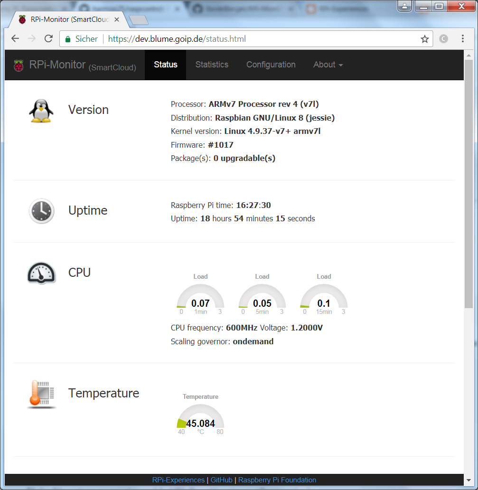

Der aktuelle Zustand der eigenen Hinbeere lässt sich sehr schön über eine Web-Oberfläche anzeigen. Hierfür habe ich einige dieser Tools aufgeführt. Ausprobiert habe ich nur den RPI-Monitor, da er sehr einfach zu installieren war.
Das Tool von Xavier Berger lässt sich dank umfangreichen Installationsscript sehr leicht installieren. Dies ist auch das einzige Programm das ich sofort zum laufen gebracht habe.
Eine gute Anleitung zu Installation findet man [hier].
UPDATE(2018-05-26): RPI Monitor gibt es nun auch als Docker image!
RPi-Monitor lässt sich über die beiden DAteien /etc/rpimonitor/data.confund /etc/rpimonitor/daemon.confparametrieren.
Container mit Log2Ram erweitern sudo apt install cron den rest wie unter RPi einrichten (https://github.com/ioBroker/ioBroker/wiki/Raspberry-Pi:-RPi-Monitor-installieren) und hier

Raspcontrol ist ebenfalls ein web control center für den Raspberry pi. Das Programm ist schon durch einige Hände gegangen und wird vom wahrscheinlich ursprünglichen Entwickler Bioshox nicht mehr gepflegt. harmon25 hat das Projekt übernommen, doch der aktuellste Stand der Fork von hdijkema zu sein.
Die Installation ist nicht ganz zu einfach wie beim RPi Monitor, lässt sich dennoch in 10 Minuten bewerkstelligen … 2 Studen später … dachte ich, aber irgendwie klappte es trotzdem nicht.
Eine von Willy geschriebene Apache Aplikation als Gesundheitscheck des PI
RasPi Check ermöglicht die einfache und unkomplizierte Informationsabfrage eines Raspberry Pi vom Android Smartphone aus. Die App verwendet dabei sine SSH verbindung zum Pi. Hierbei handelt es sich also um eine Android App und keine WEbseite wie bei den andere Programmen.
ESM ist ein WebMonitor für alle möglichen Linux distributionen, u.a. auch für den RPi. Die Anleitung auf der Homepage ist etwas knapp gehalten.